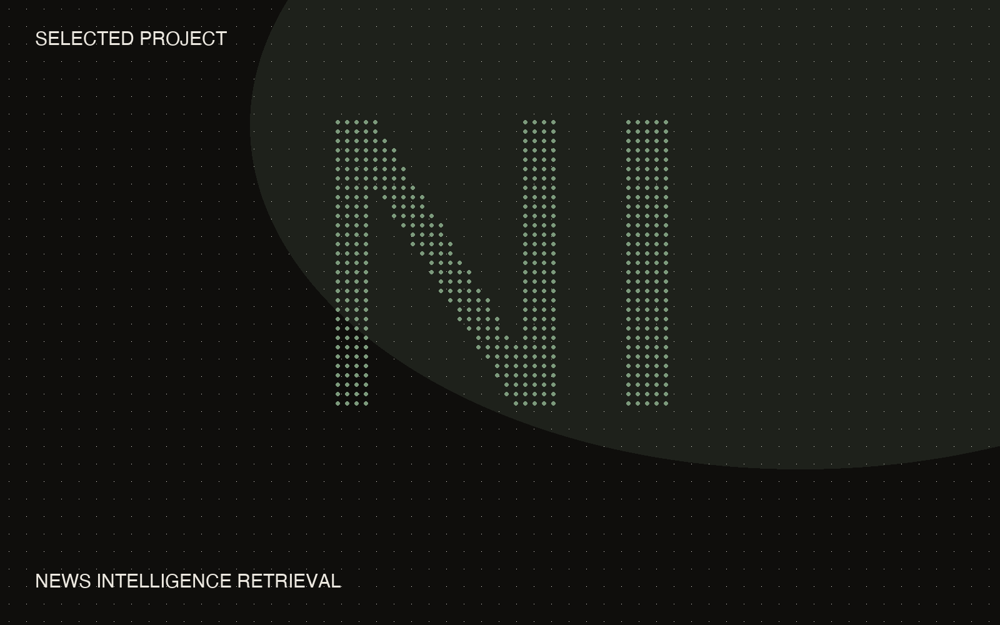

← Projects
Selected project
03
News Intel
Real-time news intelligence retrieval — data engineering at Statista.
Ingestion and retrieval pipelines for real-time news intelligence: GDELT ingest, deduplication, and embedding generation, feeding semantic search over large sharded vector indexes. What used to be keyword hunting is now search by meaning.
A Python client library for agentic retrieval and bulk export made the system self-service for other internal teams — and I own pipeline reliability end to end: observability and alerting, so failures surface instead of passing silently.
Outcome
Retrieval self-service for internal teams · sharded vector indexes in production · full observability ownership
Internal Statista system — details on request.
Python
PostgreSQL · pgvector
Embeddings
AWS
Docker
Observability
